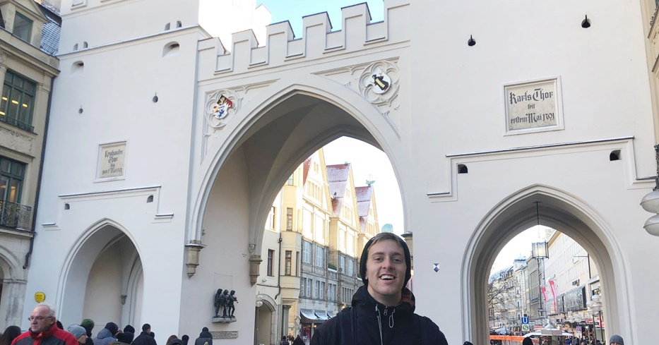

Biography
Hello, my name is Petar. I am 22 year-old, final year student of Computer Science at University Sinergija in Bijeljina, Bosnia and Herzegovina.
Even though very young, University Sinergija has provided me with a solid foundation in theory and practice in Computer Science. I have acquired skills in coding, networking, information systems, cybersecurity and databases. The diversity of the program I attend made me experience many different areas of computer science in general. On a first and second year, we worked in Java as our main programming language along with C++. On a third year, I started learning about information systems and security, cryptology fundamentals and web development where I met with HTML/CSS, MySQL, PHP and Javascript. Throughout my course, I worked on different projects in these languages. Projects that I`m proud of the most are foreign language learning application, Password manager („PevasCrypt“) application and "ptrsploit" website where I implemented my own CMS (Control Managment System) which is also my bachelor`s thesis theme. Besides programming, last six months I started getting cybersecurity more serious as I learned fundamentals of information and system protection on one of the faculty courses. My curiosity led me to start digging deeper and learn more about IT security, take a couple of courses online, start learning how to work with Kali Linux and its capabilities, penetration testing tools, different kinds of cryptological methods, reverse and social engineering.
During the past three years, I was participating in activities outside of the university as well. I`ve spent a little over a year in the USA so far, where I was a part of J1 cultural exchange programs (three summers in the row) which gave me an opportunity to discover the world in a real sense cause I never travelled anywhere outside of Balkan`s before that. On these travels I met many different people, built lifelong friendships, visited and experienced places which I only dreamed about and found myself in a various of situations which would never ever happened to me in my home country. Since I made some money in the USA, I used it to pay off my school and life at University, but also to travel as much as possible because after that first time I fell in love with the idea of just going somewhere. Beside my studies I think that travelling was the most important thing that happened to me. It helped me learn not only about different countries, people and values but also so much about myself, and how am I functioning and reacting in different environment.
As a person I am very responsible, hardworking and fanatical in a way for whatever I choose to do. Characteristic which I value the most about myself is that I am extremely persistent.
Technology is and not only my profession related segment, but also a huge part of my everyday life, something I`m passionate about and a hobby which I enjoy and love doing. I believe in professional development, leading by example, and that you are only as strong as your weakest link. Challenges and projects that require me to work out of my comfort and knowledge set is something I enjoy because I take this as a great opportunity to learn something new. I know that it takes more than just a hard work to be a good software developer and succeed in this area.